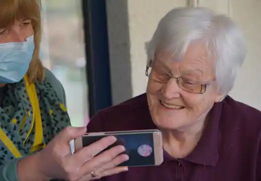
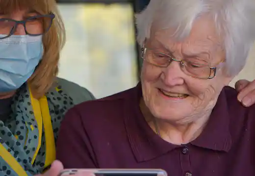

01
Home nursing
Skilled clinical care delivered calmly and confidently in familiar surroundings.
Learn moreKind, capable, close to home
A little more ease for everyday life. Our trusted caregivers bring skilled support, genuine companionship, and peace of mind to the people you love.
The Stackly standard
Why families choose Stackly
We believe great care starts with seeing the whole person. That means listening to routines, honoring preferences, and making room for the moments that make a day feel good.
Everyday support, thoughtfully done
From a few hours of companionship to around-the-clock clinical support, we shape care around real life.
Skilled clinical care delivered calmly and confidently in familiar surroundings.
Learn more
02 03
03Conversation, errands, hobbies, and the everyday joy of not doing life alone.
Learn more 04
04Fresh meals, shared moments, and gentle support for healthier daily habits.
Learn more
05Clear reminders and careful coordination to help routines stay on track.
Learn moreReliable relief for family caregivers, with continuity and warmth for your loved one.
Learn moreA gentler beginning
There is no one-size-fits-all answer. We take time to understand what would make the next season of life feel lighter.
Start a conversationTell us what is changing, what is working, and what matters most to your family.
We learn the details of daily life, health needs, personality, and preferred routines.
We introduce a caregiver whose skills and spirit fit the person, not just the schedule.
We stay close, check in often, and adjust the plan as life evolves.
The people behind the care
Our caregivers are chosen for what they know and how they make people feel.
Join our care communityCompanion caregiver
“I love learning the little things that make someone’s day feel like their own.”
Certified home health aide
“Good care is practical, patient, and always rooted in respect.”
Registered care specialist
“The best days are built from small moments of connection.”
More than care
Walks in the garden. A favorite recipe. Stories told twice. We protect the ordinary moments that make a life feel full.


Kind words from families
A trusted caregiver supports more than a schedule. They support the whole family.
“Stackly gave us back the feeling that we were a family, not just a care team. Mom looks forward to her visits with Lena every week.”
“The matching process was thoughtful from day one. James is dependable, kind, and notices the small things before we even ask.”
“I live three states away, but I never feel out of the loop. Their updates are clear, warm, and reassuring.”
Flexible by design
Start with what you need today. We can grow with you tomorrow.
For a little extra help
A few hours of dependable support to make everyday routines easier.
From $32/ hour
Choose EssentialIncludes:
For steadier support
A balanced care plan for confidence at home and breathing room for family.
From $38/ hour
Choose ComfortEverything in Essential, plus:
For comprehensive care
A fully coordinated plan for complex needs and around-the-clock peace of mind.
From $48/ hour
Choose PremiumEverything in Comfort, plus:
Every plan begins with a free, no-pressure consultation. Let’s talk about yours
One caring conversation
Tell us a little about what your family needs. We’ll listen, answer your questions, and help you find a comfortable next step.
Questions, answered
Still wondering what care could look like? We’re happy to talk it through.
Ask us anythingMany families are matched within a few days. After our first conversation, we’ll share realistic timing based on your needs and preferred schedule.
Every caregiver completes identity verification, reference checks, background screening, and role-specific training. Our care team continues to coach and support them.
Yes. Needs change, and your care plan can change with them. Your coordinator will help adjust hours, services, or caregiver matches whenever needed.
Absolutely. We keep family members in the loop with scheduled updates, clear notes, and a direct point of contact for questions from anywhere.
It’s an easy, no-pressure conversation about your loved one, your questions, and what kind of support might help. There is no obligation to continue.